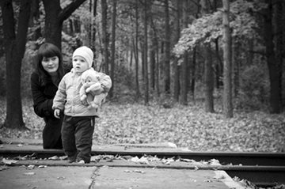

Down & Derby is Sponsored By:
Thank you for your sponsorship! To become a sponsor, email us at info@downandderbyboston.org.

Top Hat Sponsors
Individuals who have donated $200 or more
Frank Biedak
Lee Estabrook
Matt Larovere of Larovere Companies, Inc.
Mary Chiochios of Charity Warriors Challenge
Thank you for your donations! To become a Top Hat Sponsor, click here.
Kennedy Elsey
Karson & Kennedy, Mix 104.1
Gustavo Leon
Managing Editor/Creative, Boston Herald
Julia Scaparotti
Miss Massachusetts USA 2017
- Complimentary hors d'oeuvres provided by Serafina.
- Complimentary dessert provided by Party Favors Brookline.
- Complimentary Mint Julep tasting and pizza with the purchase of a VIP ticket.
- Special a la carte menu.
- Four bars means less standing in line for your Mint Julep.
Live Music by Louie Bello
4PM - 8PM
DJ Scott Morgan
8PM - 12AM
Hat Contest and Best Dressed Contest
Who are you wearing?
Joan Rivers Lives!
50/50 Raffle
Take a Gamble!
"The Most Exciting Two Minutes
In Sports!"

$500 in advance, $550 at the door*
Dear Friends,
My name is Laura Ladd and a number of years ago I was a juror in a first degree murder case that involved domestic violence. The case left me heartbroken and wondering about the victim and the challenges she faced. I decided to do my part to support women who struggle to connect with resources that allow them to move beyond crisis.
I reached out to RESPOND - New England's first domestic violence agency. Every year, RESPOND helps over 10,000 women, men, and teens from communities throughout Greater Boston and beyond, regardless of their ethnicity, orientation, or gender. For victims of domestic violence, the daily struggle to survive is saddled with challenges like abuse and psychological trauma. It makes you wonder which issue would be the priority if you had so many to manage all alone? Sadly, some have no choice but to stay with an abusive partner because it ensures a roof over their head and their children's. I am moved by the way RESPOND saves lives, and for this reason, I'm reaching out to you to ask for your support.
On Saturday, May 6th, my friends and I are hosting Down & Derby, our 8th annual community fundraiser. Down & Derby is a Kentucky Derby themed event to raise funds for RESPOND. The event will be held at Serafina and we are expecting 400 young professionals from Greater Boston in attendance. The event is sophisticated, yet fun, to reflect the traditional sporting event's stature, and the message is to support survivors of domestic violence right here in Boston.
We look forward to seeing you at Serafina, and appreciate your support.
Sincerely,
Laura Ladd
Friend and Volunteer of RESPOND
About Serafina
Serafina has generously provided their beautiful restaurant space as a venue for Down & Derby for the second year in a row.
Serafina brings contemporary Italian cuisine to Boston's Financial District. Enjoy bars on both floors, complimentary passed hors d'oeuvres, and any delicious item from the menu.
This spacious venue provides two floors worth of bars, Kentucky Derby Viewing, and entertainment.
All to be enjoyed with what other than a Kentucky Bourbon Mint Julep!
New England's first domestic violence agency and the second oldest in the nation, RESPOND, Inc. is a pioneer in the movement to end domestic violence. Its work began in the early 1970s, when four Somerville, Massachusetts women started a grassroots effort to support victims of domestic violence by opening their own homes as safe havens for women fleeing abuse.
In 1974, these "founding mothers" formed RESPOND. For over 40 years RESPOND has provided life-saving shelter, support services, training and education to more than 100,000 members of the community. Services are free and confidential, and available to all survivors of domestic abuse.